A real film engine.
Built from published technical data.真正的胶片引擎。
按厂商公开的技术资料建模。
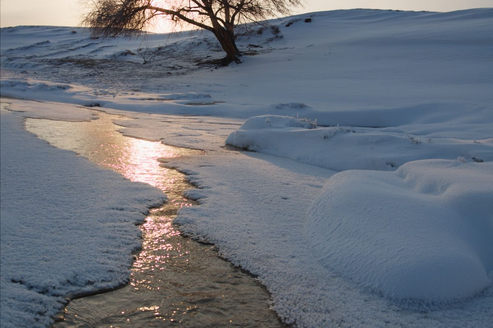
ffilm
A photo editor that works the way film does.一款按胶片成像原理工作的修图 App。

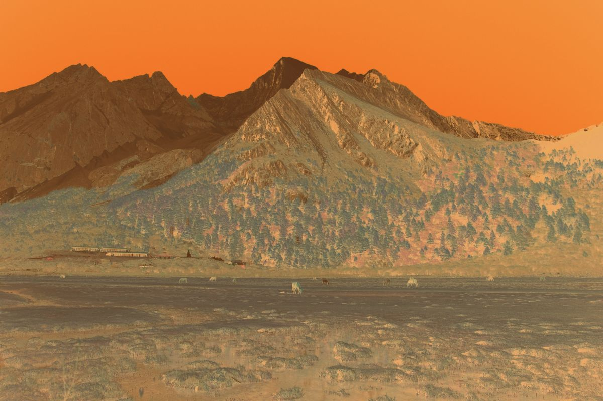

Pick a film. Set the exposure.
Print it on paper.选一卷胶片，定好曝光，
印到相纸上。
One photo. Two ways to develop.同一张照片，两种冲法。
Or skip the film and grade the original.也可以不套胶片，直接修原片。
A real film engine.
Built from published technical data.真正的胶片引擎。
按厂商公开的技术资料建模。

Film mode or Edit mode.
Two ways to develop, kept apart.胶片模式，或者修图模式。
两种冲法，互不打扰。

16 ready-made recipes.
From darkroom B&W to street color.16 个现成配方。
从暗房黑白到街拍彩色。

Linear, radial and subject masks.
Add or subtract to shape them.线性、径向、主体蒙版。
可以相加，也可以相减。
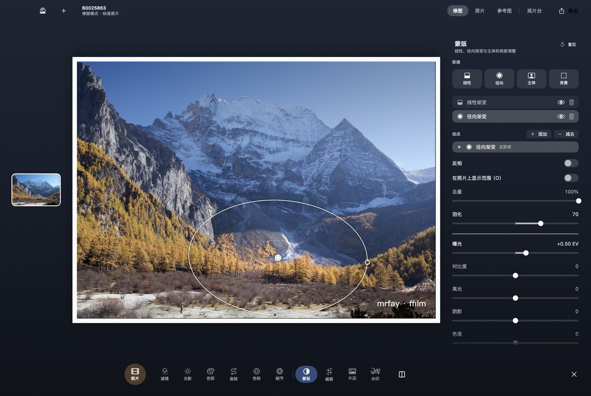
A date stamp that glows like the real thing.
Burned into the film, not pasted on.日期印记，像真的一样发光。
是曝光在底片上的，不是贴上去的。
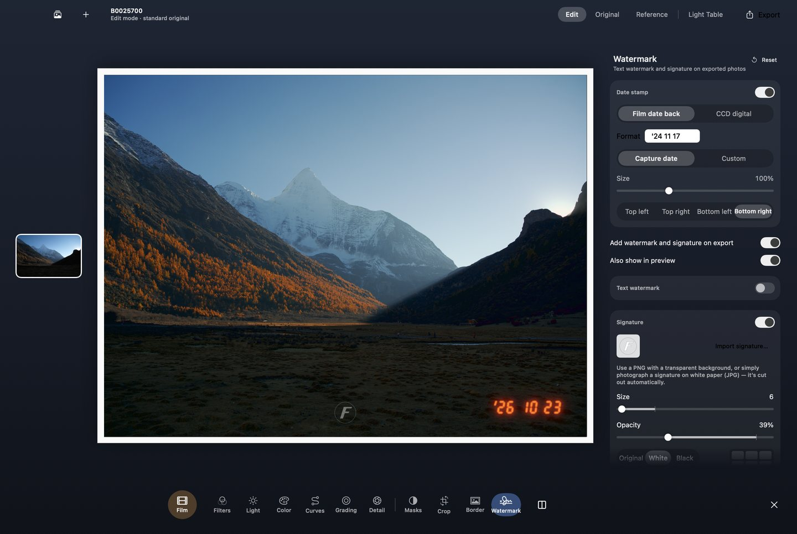
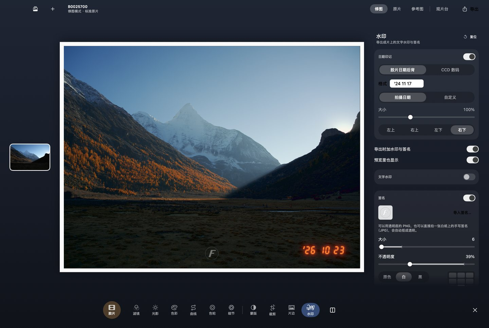
Light Table.
Lay out your prints like slides.观片台。
把成片像幻灯片一样摆开。
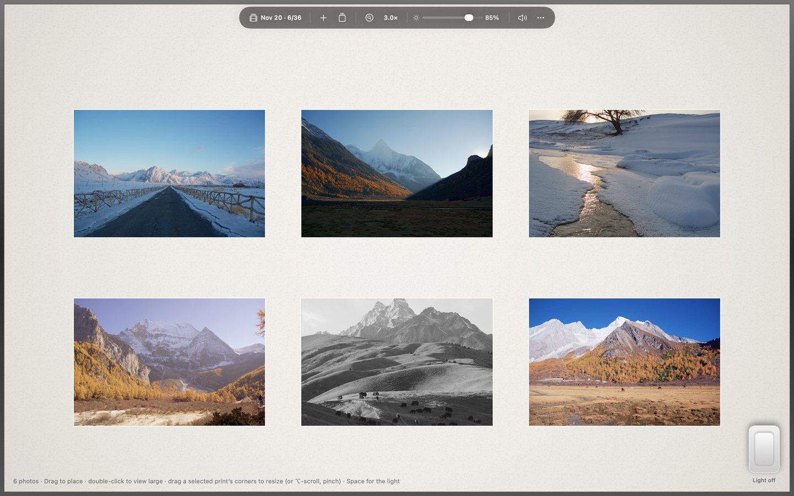
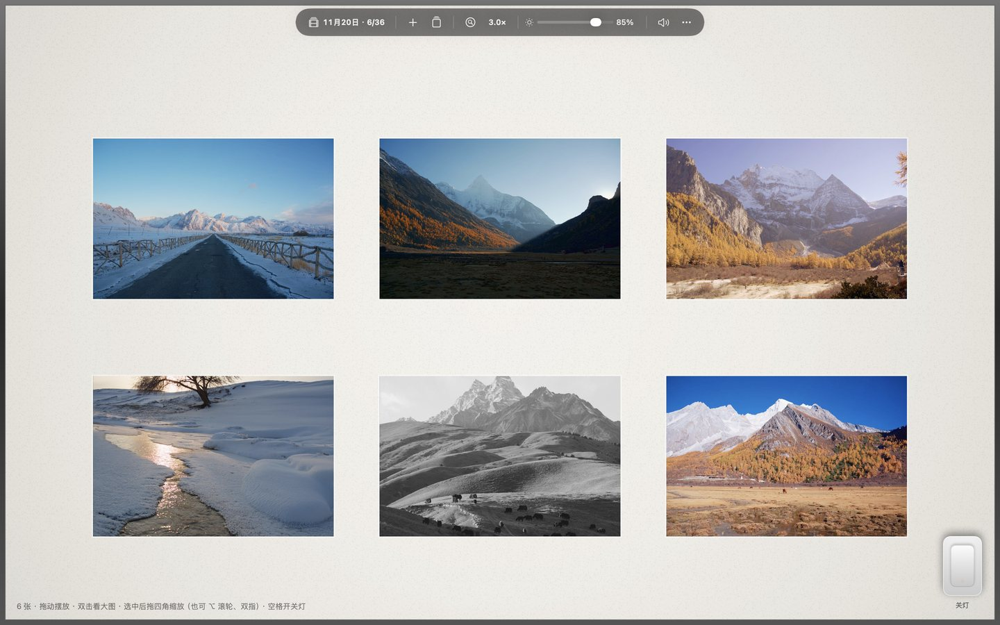
Not a filter. A film engine. ffilm models how film responds to light — the tone curve, the color between layers, grain and halation — then prints the negative on paper.
不是滤镜，是胶片引擎。ffilm 模拟胶片对光的反应——影调曲线、层间色彩、颗粒与光晕——再把底片印到相纸上。
Film engine胶片引擎
Light first hits the film. ffilm works out how much each of the three emulsion layers is exposed, follows each film’s characteristic curve to dye density, and lets the layers influence each other the way color negatives do.光先落在胶片上。ffilm 算出三层乳剂各自受了多少光，按每卷胶片的特性曲线换算成染料密度，再让三层像彩色负片那样相互影响。
Then the darkroom. Print the negative on color or black-and-white paper — or scan it, like a lab would. Grain is derived from published granularity data, and halation can glow around strong light.然后进暗房。把底片印到彩色或黑白相纸上，也可以像冲扫店那样扫描成数码图。颗粒按公开的颗粒度数据换算，强光周围还能泛起光晕。
Film mode胶片模式


Edit mode修图模式
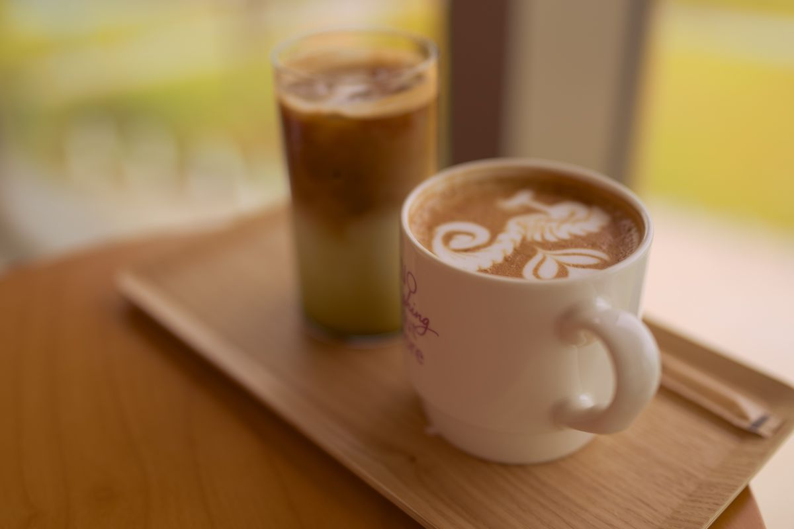


Or skip the film entirely.也可以，完全不套胶片。
ffilm for MacMac 版
Your photo fills the window. Tools float beside it, and step aside when you don’t need them.照片铺满整个窗口。工具浮在一旁，不用的时候自己让开。
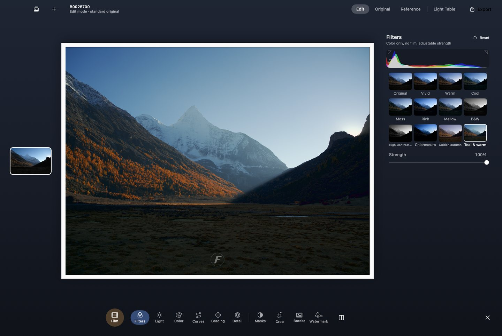

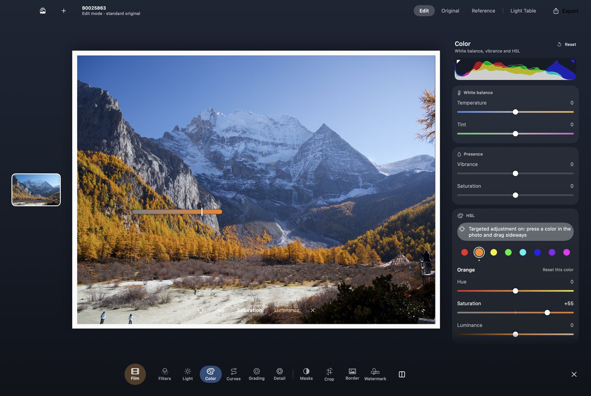
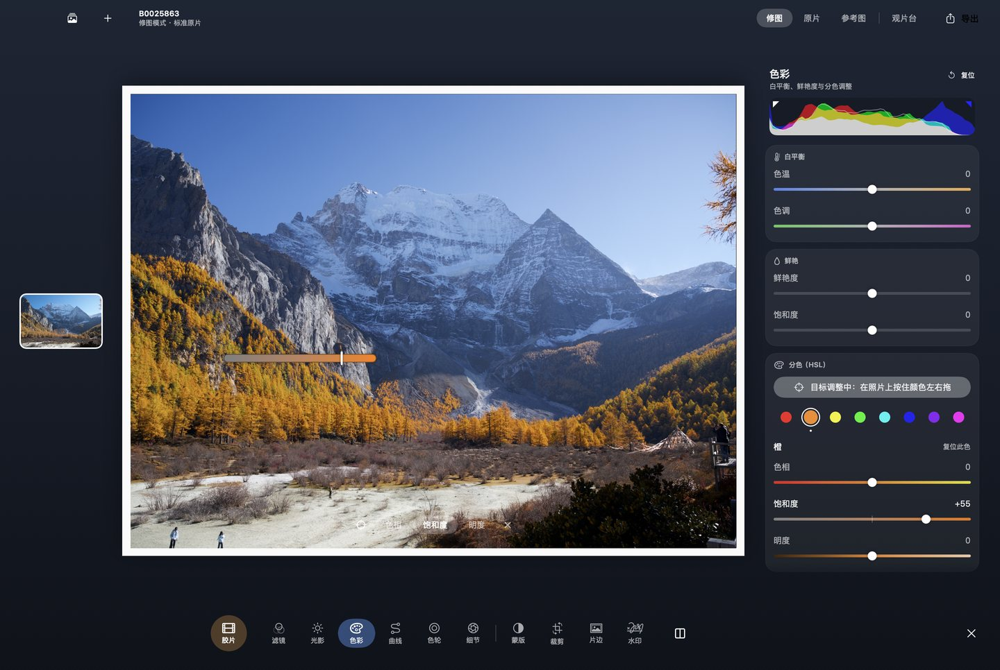
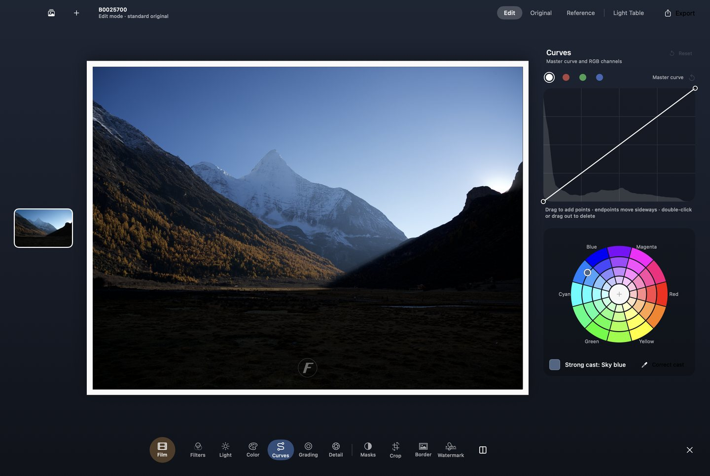
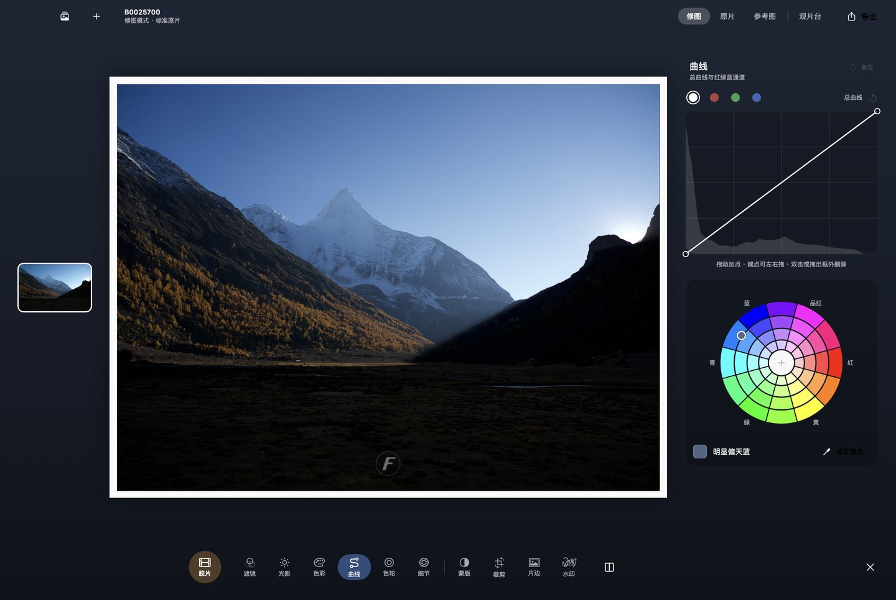
Finishing收尾
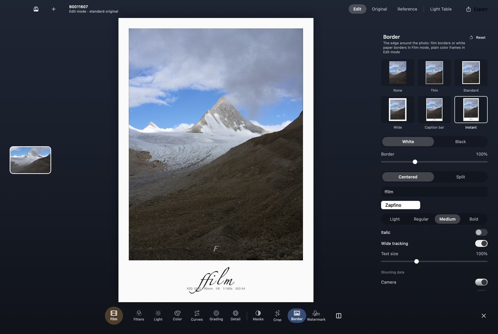
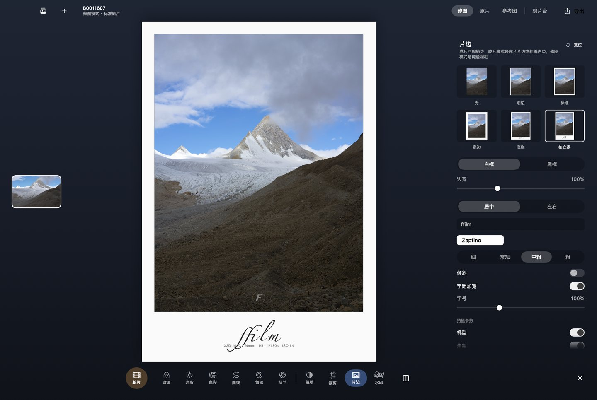
Light Table.观片台。 Every export can land on a glowing light box, sorted into rolls. Arrange, compare, and look closer with a loupe.导出的成片可以自动放上发光的灯箱，按卷整理；摆一摆、比一比，再用放大镜细看。
Everything happens on your device. No account. No upload. No tracking. No ads.所有处理都在你的设备上完成。不用注册，不上传，不统计，没有广告。
ffilm 1.0